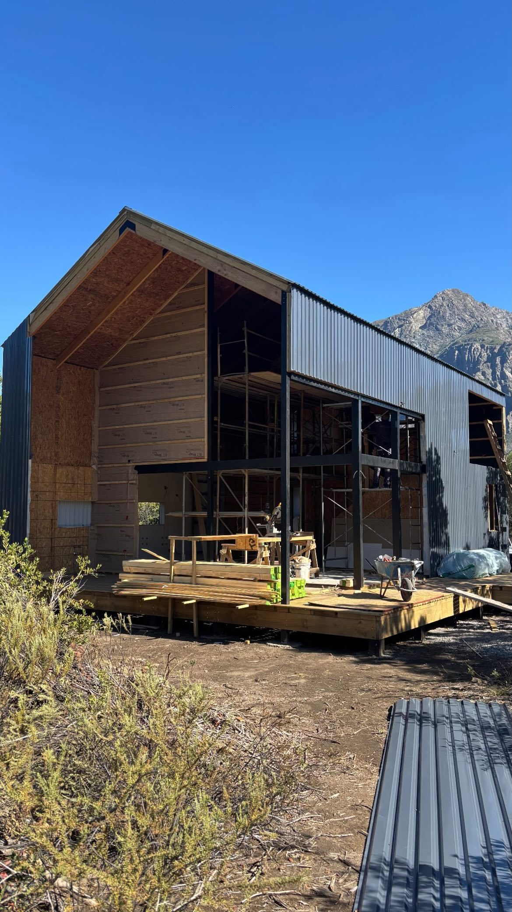
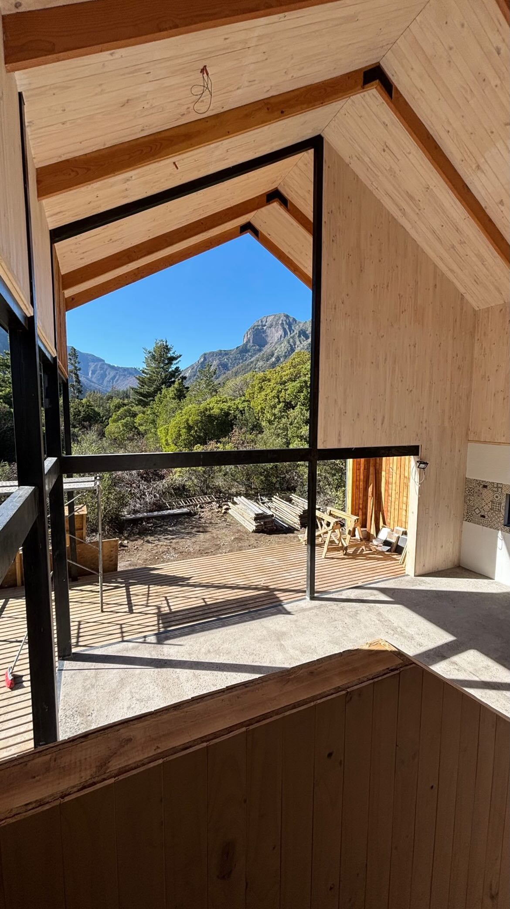
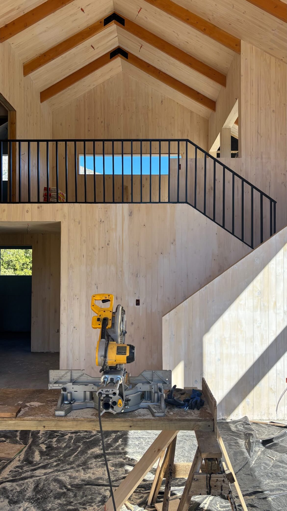
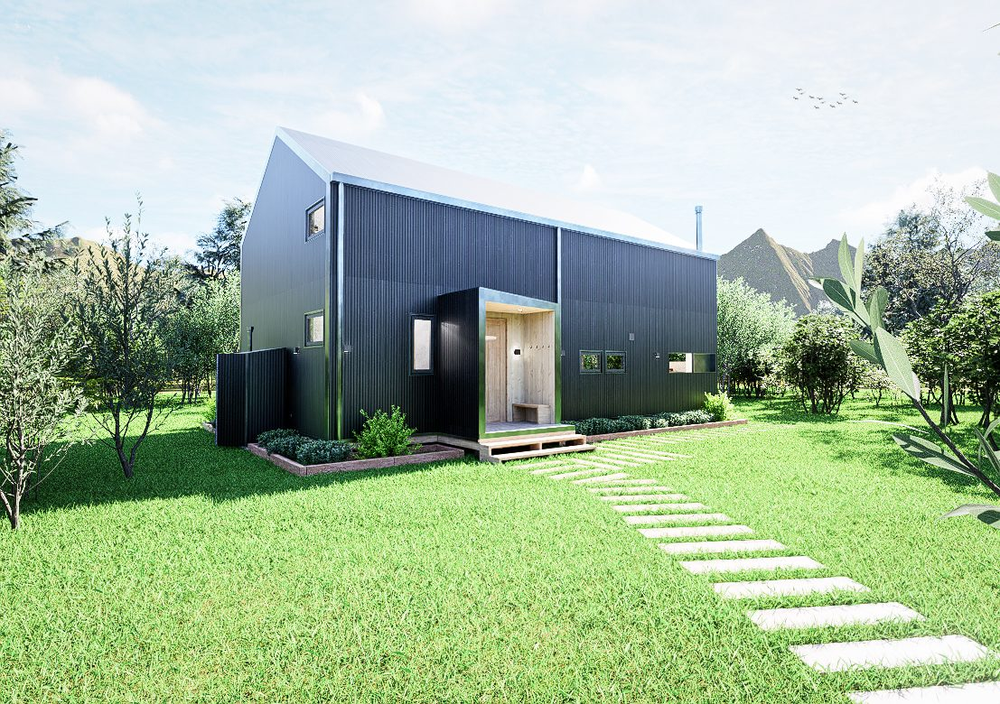

Ficha A-106 · Vivienda unifamiliar
Una casa de dos niveles en Armerillo, precordillera de San Clemente, con living-comedor de doble altura y una arquitectura pensada para el clima de montaña, en medio de un bosque nativo.





Casa Armerillo se emplaza en un terreno de 5.000 m² en Armerillo, en la precordillera de San Clemente, rodeada de bosque nativo y con vista directa a la cordillera. El encargo fue una casa compacta de 106 m² en dos niveles, capaz de funcionar durante todo el año pese a las bajas temperaturas y la nieve propias de la montaña.
El proyecto se resolvió íntegramente en panel SIP, un sistema que permite una excelente aislación térmica con una obra relativamente rápida, clave en un terreno de difícil acceso y con una ventana de construcción acotada por el clima. El volumen adopta la forma de una cabaña de techumbre a dos aguas de alta pendiente, que evacúa la nieve y protege la fachada principal con un alero pronunciado.
Al interior, el corazón de la casa es un living-comedor de doble altura que se abre hacia el paisaje a través de un gran ventanal de piso a cielo, enmarcado en acero negro, desde donde se observan directamente los cerros que rodean el valle. El segundo nivel, organizado en torno a una galería interior, alberga los dormitorios con vista al bosque.